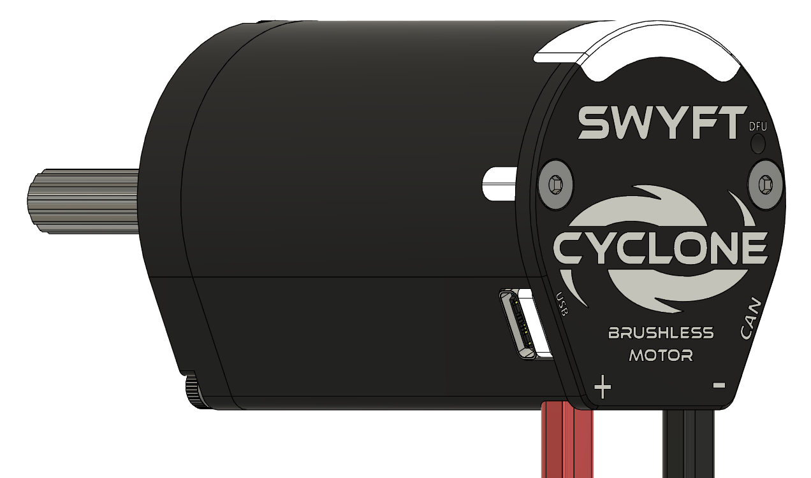
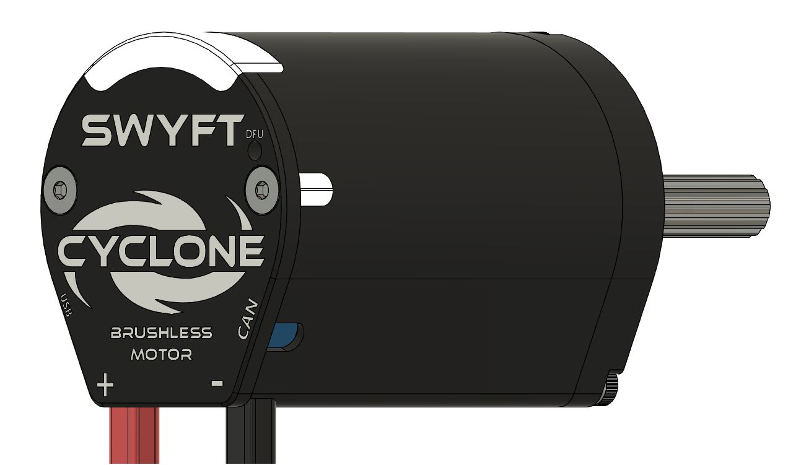

Status lights
Seven lights: two report the controller, five are yours.
Under the rear window are seven lights in a row. The two at the ends report controller state and cannot be written by robot code. The five in the middle, numbered 1–5 from left to right, are yours to set. A separate LED beside the DFU Button indicates bus power. Wiring


What the end lights mean
Select the lights to play one pattern at a time. Select the same pattern again to turn it off. Keyboard: Tab to a pattern, then Enter or Space.
| Pattern | Meaning | What to do |
|---|---|---|
| Dark | No power. | Check the leads and the breaker. |
| Red, alternating | Powered, but nothing is talking to it. | Connect USB-C, or bring up CAN and check termination. |
| Orange, alternating | Host communication is present, but there is no live robot signal. | Normal before enabling in a standalone USB-C session. On a robot, check the SystemCore / Driver Station connection and robot program. |
| Orange, together | Live robot signal, output disabled. | For a motor test, enable Driver Station and the intended control source when ready. Driver Station alone does not command motion. |
| Orange, solid | Enabled, output at rest. | Command the motor. |
| Green, solid | Driving forward. | — |
| Red, solid | Driving in reverse. | — |
| Orange, brief offset flashes | Over-temperature. Output is cut. | Let it cool. Lower the stator limit; clear the jam. |
| Red and orange, alternating | A fault has latched. The motor will not drive. | Read the fault in SWYFT Link, clear the cause, then clear it. Faults |
| Blue, flashing together | Two devices share this number. | Give one a different number (1–62). |
| White, flashing | Identify — you asked this motor to show itself. | None. It stops after a couple of seconds. |
| White, solid | The resident updater is active. | Check progress in SWYFT Link. If it fails, follow update troubleshooting. |
Driving forward and reverse show a solid colour — green or red. It marks direction only; the colour does not brighten or blink faster with speed.
Your five lights
You can set the five middle lights from robot code or SWYFT Link. Each colour uses red, green, and blue (RGB) values from 0 to 255. The firmware limits their brightness. Set the colours again after the motor restarts. Setting all five to black releases your colour setting; clearLEDs() sends that same release command. LEDs in the API reference
The two end lights keep showing a fault until it is cleared. Changing the five middle lights cannot hide that indication. Use the end lights and SWYFT Link to check the motor’s status.
Animations
The available choices are Static (a steady colour), ChaseForward, ChaseReverse, Breathe, and Rainbow. Setting a static colour stops the animation. Animation movement pauses while the motor drives.